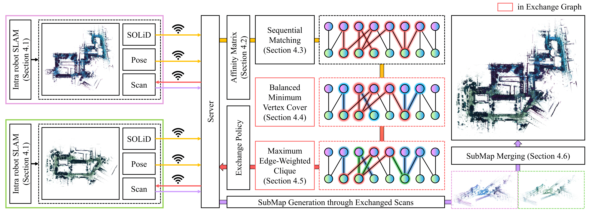
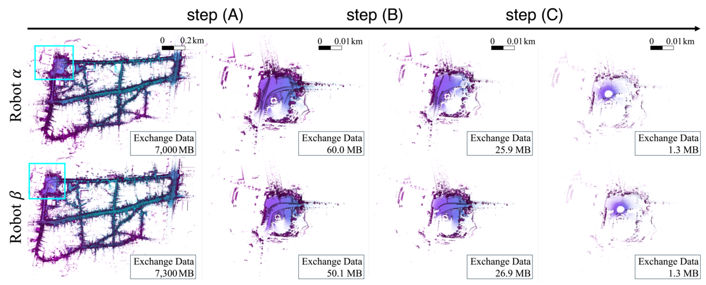

Centralized: server overload
Every robot streams its scans to a central server that performs the merge. This gives a global view, but the server and its uplink become a bottleneck that saturates as the team size and mission length grow.
By maintaining global consistency across robot teams, multi-robot light detection and ranging (LiDAR) map merging enables faster exploration and efficient area coverage. However, map merging requires exchanging massive sensor data between the server and robots, making communication the bottleneck, especially in communication-constrained environments. Therefore, we present Commerge, a communication-efficient map merging framework that achieves bandwidth reduction through graph-theoretic selective data exchange. By doing so, our Commerge reduces inter-robot communication by up to 5,000× while maintaining alignment accuracy. Our key insight is that only a small subset of carefully selected scans is sufficient for robust map merging . We formulate this as a three-stage cascaded optimization problem on an exchange graph, where vertices represent robot keyframes and edges denote candidate inter-robot loops. Through three cascade stages, we select a sequentially overlapped, balanced-transmission-cost, and geometrically-perceptually optimal scan subset that preserves alignment quality while reducing communication. Unlike existing approaches that either transmit whole scans, which require GB-scale data exchange, or employ naı̈ve downsampling, our approach exchanges only MB-scale data while achieving comparable alignment accuracy. Extensive evaluation on five public datasets and four in-house datasets covering cave, planetary-analog, indoor, and outdoor campus environments shows up to 99.98% reduction in data exchange (e.g., from 7,000 MB to 1.3 MB on the HeLiPR dataset), while maintaining alignment performance across embedded to desktop platforms. Furthermore, we demonstrate that our proposed framework operates on resource-constrained hardware where existing methods fail, enabling real-world multi-robot deployment in bandwidth-limited field operations. Finally, we validate system robustness under a real-world non-line-of-sight (NLOS) communication environment with up to 73.3% dropout rate, as well as under emulated network degradation scenarios including delay, bandwidth limitation, and packet loss, confirming reliable map merging even under severely degraded connectivity.
Multi-robot LiDAR map merging keeps a robot team globally consistent by aligning the maps that each robot builds on its own. Existing pipelines follow one of two paradigms, and each pays a different communication price.
Every robot streams its scans to a central server that performs the merge. This gives a global view, but the server and its uplink become a bottleneck that saturates as the team size and mission length grow.
Robots exchange scans peer-to-peer, removing the single bottleneck, but every encounter or revisit triggers bursty, redundant transmissions that flood the limited shared bandwidth.
This communication bottleneck is the gap Commerge targets. Especially in bandwidth-limited field settings e.g., caves, planetary-analog sites, disaster zones neither extreme is affordable: transmitting whole scans is infeasible, while naive downsampling discards exactly the geometry needed for reliable alignment.
Only a small subset of selected scans is sufficient for map merging. Map merging is ultimately decided by a handful of inter-robot loops, and each loop hinges on the overlapping, geometrically and semantically distinctive regions shared between robots. Most of the remaining scans are near-duplicate or low-information, and transmitting them adds communication cost without improving alignment. Building on this observation, Commerge reframes "what to transmit" as a principled scan selection problem: identify the few scans that carry the merge-relevant geometry, and exchange only those. The selected subset is orders of magnitude smaller than the full scan stream, yet preserves the evidence needed for robust, accurate map merging, so communication stays at the MB scale while merging quality is retained.
An exchange graph whose vertices are robot keyframes and edges are candidate inter-robot loops turns "what to transmit" into a principled selection problem instead of ad-hoc downsampling.
A cascaded optimization selects a sequentially overlapped, transmission-cost-balanced, and geometrically-perceptually optimal scan subset that preserves alignment quality.
Up to 99.98% reduction in data exchange (e.g., 7,000 MB → 1.3 MB on HeLiPR dataset), reaching up to 5,000× lower inter-robot communication.
Robust, fast merging validated on five public and four in-house datasets across cave, planetary-analog, indoor, and outdoor campus environments, from desktop to embedded platform (i.e., Jetson Nano).
Each robot runs intra-robot SLAM and sends only its lightweight SOLiD descriptors and poses to the server. On the server, Commerge builds an exchange graph over the received keyframes and candidate inter-robot loops, then runs a three-stage cascaded optimization that decides which scans are worth exchanging. This selection policy is returned to the robots, which then transmit only the selected scans. Finally, the server merges these scans into a globally consistent multi-robot submap.

Scan selection is formulated as a three-step cascaded optimization on the exchange graph. The steps are applied in order, and each one further lowers the communication load while keeping the per-robot communication cost balanced and preserving geometric-perceptual consistency.
Reason Map merging assumes robots traverse overlapping regions, so a sequentially overlapped region always exists between their trajectories.
Method Match scans through connectivity built from SOLiD similarity, so the retained candidates still cover the shared structure required for alignment.
Reason Thinning candidates can be cast as a minimum vertex cover, but solving it directly may pile the communication load onto one robot.
Method Add a balancing constraint on vertex cardinality to the vertex cover so the transmission cost is shared evenly across all participating robots.
Reason A plain vertex cover keeps only one scan per loop, so it can throw away geometrically and perceptually informative observations.
Method Select a maximum edge-weighted clique whose weights fuse SOLiD and pose cues, keeping the mutually geometric-perceptual consistent scans.

We evaluate Commerge on five public and four in-house datasets spanning cave, planetary-analog, indoor, and outdoor campus environments, on platforms from desktop to embedded. Mirroring the three properties in its title, we show that Commerge is communication-efficient, robust, and fast: it exchanges orders of magnitude less data, keeps merging under degraded connectivity, and runs from desktop down to a Jetson Nano.
Data exchanged per merge on the Town sequence of HeLiPR dataset.
End-to-end execution time on the HeLiPR Town sequence, broken down by stage, from desktop to embedded.
We ablate the three cascade steps (A: sequential matching, B: balanced minimum vertex cover, C: maximum edge-weighted clique) on two datasets of different scale. Sequential matching (A) alone already merges accurately but exchanges the most data. Adding the balanced minimum vertex cover (B) cuts both the optimization time and the data exchanged, while the maximum edge-weighted clique (C) on its own is intractable, with its optimization time exploding. Only the full cascade (B + C) is simultaneously the fastest to optimize and the cheapest to transmit, while keeping RMSE competitive.
The advantage grows with data scale: on the larger HeLiPR sequences the full cascade cuts the clique's optimization time from 283,638 s down to 17 s and data from 209.8 MB to 14.4 MB, a far larger margin than on the smaller NTU sequences.
A: Sequential Matching · B: Balanced Minimum Vertex Cover · C: Maximum Edge-Weighted Clique.
A: Sequential Matching · B: Balanced Minimum Vertex Cover · C: Maximum Edge-Weighted Clique.
@article{kim2026commerge,
author = {Kim, Hogyun and Choi, Jiwon and Kim, Juwon and Yang, Geonmo and Jeong, Seokhwan and Lim, Hyungtae and Cho, Younggun},
title = {Commerge: Communication-Efficient, Robust, and Fast LiDAR Map Merging Framework for Multi-Robot Coordination in Resource-Constrained Scenarios},
journal = {International Journal of Robotics Research (IJRR)},
year = {2026},
}